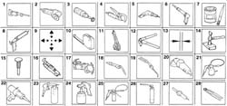
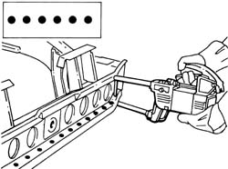
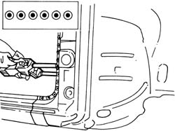
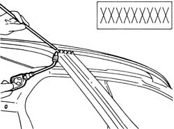
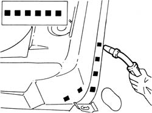

INTRODUCTION - REMOVING REFITTING
- Path
- Procedures > 72 PANELS AND FRAME > 7210 REMOVING REFITTING > INTRODUCTION - REMOVING REFITTING
- Kind
- repair procedure (removal / refitting; the operation number is the code)
- Applies to
- all engines; all production periods
- Interactive page
- https://sloeber94.github.io/elrnDB-aGt/en/#/125002053
Applies to: engines: 1.9 JTD 16V; all production periods
WARNINGS
WARNINGS
The graphic index and the description of the symbols appearing in the repair procedures are given below.
Symbols
.

1 - Cut with hack-sawing machine
2 - Cut with circular saw
3 - Clean with rotary brush
4- Remove spot welds with spot weld remover
5 - Remove spot welds with spot weld remover Drilling for MIG welding
6 - Prepare panel using chisel Drilling for MIG welding
7 - Application of electro-weldable protectives
8 - Apply high-thickness electroweldable protective coating
9 - Locate components
10 - Measure
11 - Secure components
12 - Secure threaded rivets
13 - Check openings are aligned
14 - Straighten edges using a profiled stake and hammer
15 - Remove weld spots with chisel and hammer
16 - Remove treatment with pneumatic knife
17 - Spot welding
18 - MIG welding
19 - Welding with oxyacetylene torch
20 - Grinding
21 - Apply rustproofings
22 - Apply sealants
23 - Apply underbody protective coatings
24 - Apply paints
25 - Apply wax-based protection
26 - Apply foam products
27 - Heating with hot air
28 - Removing panel offcuts
Processing symbols
The symbols are given below of the work tasks which are described in the repair procedures with an example of application. In the descriptions of the procedures, beside the progressive number of the steps of the procedure relating to welding tasks, there may be numbers in brackets which indicate the number of spot welds to be made or to be filled by MIG welding.
Cut made by hack saw or pneumatic chisel

Spot welding

Spot welding (three panels)

Continuous - sectional MIG welding

Brazing

MIG fill welding

Sealing